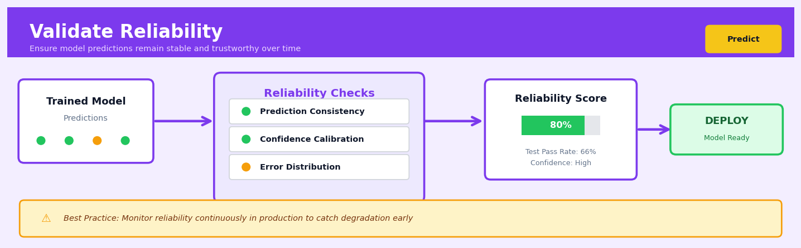

Validate Reliability#


The most common mistake is treating reliability validation as a one-time checkpoint before deployment instead of an ongoing monitoring practice. Models that pass all reliability checks at launch can silently degrade as data distributions shift, so you need automated alerts tracking prediction consistency, calibration drift, and error pattern changes in production. I've seen teams catch catastrophic failures weeks earlier just by setting up simple threshold alerts on rolling prediction variance and confidence score distributions.
The 60-Second Version#
What it does: Validate Reliability tests whether your model’s performance is genuinely trustworthy or just got lucky with your data sample.
When to use it: Before you deploy any predictive model that will drive business decisions—especially in high-stakes environments like credit approval, inventory planning, or customer targeting—you need to know if the model will perform consistently in the real world.
What you get back: A statistical assessment showing whether your model’s accuracy is stable across different data samples, time periods, and customer segments, plus clear flags if performance varies dangerously.
Difficulty |
Moderate |
Typical runtime |
Minutes to hours depending on resampling iterations |
What you bring |
A trained model, test data, and key subgroups or time periods to validate across |
What you get |
Confidence intervals, stability metrics, and calibration assessments across validation dimensions |
Heuristix bucket |
Predict — Machine Learning & Forecasting |
A model that works brilliantly on your test set but fails in production destroys trust and wastes resources—reliability validation catches this before deployment.
Learning Objectives#
After reading this chapter, a business user will be able to:
Identify situations where model predictions require reliability validation before deployment, such as credit decisioning systems, demand forecasts that drive inventory purchases, or customer churn models that trigger retention campaigns.
Interpret confidence intervals, bootstrap distributions, and temporal stability plots to explain to stakeholders whether a model’s performance is genuinely strong or potentially unreliable due to sampling variability or data drift.
Decide whether to deploy a model to production, request additional data collection, or implement monitoring thresholds based on reliability metrics like prediction interval coverage and subgroup performance consistency.
After reading this chapter, a data scientist will be able to:
Implement bootstrap resampling, cross-validation with repeated splits, and temporal validation schemes to quantify model stability across different data samples and time periods.
Configure the number of bootstrap iterations, confidence levels for prediction intervals, and statistical significance thresholds while balancing computational cost against precision requirements.
Diagnose reliability failures by distinguishing between random sampling variation, systematic bias in subgroups, temporal drift, and miscalibrated uncertainty estimates through residual analysis and calibration plots.
Overview#
Validate Reliability is a model evaluation framework that quantifies the consistency, stability, and trustworthiness of predictive models across multiple dimensions—including repeated sampling, temporal stability, subgroup performance, and prediction interval calibration. Its core purpose is to determine whether a model’s performance metrics are robust enough to support high-stakes business decisions or whether observed results may be artefacts of sampling variability, data drift, or overfitting. This technique belongs to the family of model validation and statistical inference methods, drawing on resampling theory, hypothesis testing, and uncertainty quantification.
When to Use This#
Use when deploying models to production — Before a model influences real business decisions, you must verify that its performance is not a statistical fluke and will generalise to future data.
Use when comparing multiple candidate models — When two models have similar point estimates of performance, reliability analysis reveals which model has more stable, trustworthy metrics.
Use when stakeholders require confidence intervals — Regulators, executives, and auditors often need uncertainty bounds on model performance, not just single numbers.
Use when working with small datasets — Limited data makes point estimates unreliable; bootstrap and cross-validation techniques quantify this uncertainty explicitly.
Use when detecting model degradation over time — Reliability metrics computed on rolling windows can trigger alerts when models drift out of acceptable performance bounds.
Use when validating models on protected subgroups — Fairness requirements demand that models perform reliably across demographic segments, not just on average.
Use when prediction intervals are critical — In forecasting contexts, verifying that stated confidence intervals actually contain the true values at the claimed rate is essential.
Do NOT use when you only need a quick sanity check — If you simply need to verify a model runs without errors, simpler diagnostic tools suffice.
Do NOT use as a substitute for domain validation — Statistical reliability does not guarantee that a model is solving the right problem or using appropriate features.
Do NOT use when computational resources are severely constrained — Resampling methods require fitting models many times, which may be prohibitive for very large models or datasets.
Questions This Answers#
Trust and Decision Confidence#
Can we actually trust this forecast enough to commit $5M to inventory for next quarter?
If we re-run this model next month with fresh data, will we get the same recommendations or completely different ones?
This model says our customer churn will drop to 12% — how confident should we be in that number when presenting to the board?
Are we making decisions based on real patterns or just noise in the data?
The model performed great in testing, but will it still work six months from now when market conditions change?
Performance Consistency and Risk#
Why does this model predict revenue accurately for our enterprise clients but keeps missing the mark for small businesses?
If we deploy this pricing model across all regions, which markets might see unreliable results?
Our fraud detection worked perfectly in January — should we expect the same accuracy in December during holiday shopping?
This demand forecast has a margin of error of ±200 units — is that tight enough to optimize our supply chain, or are we still flying blind?
We’ve tested three different models — which one will give us the most consistent results when we scale it company-wide?
Implementation and Investment Decisions#
Should we invest in retraining this model quarterly, or is it stable enough to run for a year?
Before we replace our current forecasting process, how do we know this new model won’t be just as unpredictable?
We’re seeing great results in the pilot — but how do we know it wasn’t just luck with this particular customer sample?
If this recommendation engine works differently for different customer segments, where should we roll it out first and where should we hold back?
How It Works#
Imagine you’re interviewing a job candidate who claims to be an expert archer. She shoots ten arrows at a target and gets a perfect bullseye cluster. Impressive! But before you hire her as your company’s archery instructor, you’d want to see more. Can she repeat that performance tomorrow morning? What about on a windy day? Can she hit the target consistently with different bows? Does she perform equally well when aiming at moving targets versus stationary ones? A single perfect round might be skill—or it might be luck. Validate Reliability is the process of running these repeat tests on your predictive model to distinguish genuine, dependable performance from a lucky shot.
SINGLE MODEL EVALUATION VALIDATE RELIABILITY
┌─────────────────────┐ ┌──────────────────────────────┐
│ Train → Test │ │ Multiple Stability Tests │
│ Accuracy: 94% │ │ │
│ ✓ Looks great! │ →→→ │ ┌────────┬────────┬──────┐ │
└─────────────────────┘ │ │ Test 1 │ Test 2 │Test 3│ │
│ │ 94% │ 91% │ 68% │ │
Is this reliable? │ └────────┴────────┴──────┘ │
Or just lucky? │ ┌────────┬────────┬──────┐ │
│ │Resample│Temporal│Subgrp│ │
│ │ Stable?│ Drift? │ Bias?│ │
│ └────────┴────────┴──────┘ │
│ ┌─────────────────────────┐│
│ │ Confidence Intervals: ││
│ │ "True accuracy likely ││
│ │ between 87%–93%" ││
│ └─────────────────────────┘│
└──────────────────────────────┘
↓
RELIABILITY REPORT: Performance stable across
resampling, but shows temporal drift and
subgroup disparities. Use with caution.
Step 1: Create multiple test scenarios — The process begins by generating different versions of your test data. Think of this as creating parallel universes where your model faces slightly different challenges: random subsamples of your data, data from different time periods, or data split by customer segments or regions.
Step 2: Measure performance across all scenarios — Your model makes predictions on each test scenario, and you calculate its accuracy, precision, or whatever metrics matter to your business. You’re building a report card with grades from multiple teachers, not just one.
Step 3: Quantify the variation — Now examine how much those performance scores bounce around. Does your model score 94%, 93%, 95% across tests (tight and reliable), or does it swing wildly between 68% and 94% (unstable and risky)? Calculate the spread and identify patterns in where performance drops.
Step 4: Test temporal stability — If your data has a time dimension, the system checks whether your model’s performance degrades over time. A model trained on January data might work beautifully in February but collapse in June due to changing customer behavior or market conditions.
Step 5: Examine subgroup fairness — The validation splits your data by important categories—age groups, product lines, geographic regions—and checks if your model performs consistently everywhere or excels with some groups while failing others.
Step 6: Generate confidence intervals — Instead of reporting a single performance number, the system provides a range: “We’re 95% confident this model’s true accuracy falls between 87% and 93%.” This quantifies your uncertainty and helps decision-makers understand the risk.
The key insight: A model’s performance on a single test set tells you what happened once, but Validate Reliability tells you what will consistently happen in the real world—the difference between a lucky guess and a trustworthy prediction system.
The Intuition#
Imagine you are hiring an archer to defend your castle. A candidate demonstrates their skill by shooting ten arrows at a target, and nine hit the bullseye. Impressive—but should you trust this performance? What if the wind was unusually calm that day? What if the target was closer than usual? What if this archer performs brilliantly in practice but chokes under pressure during actual battle? To truly trust this archer, you would want to see them perform consistently across many days, varying conditions, and different targets. You would want to know not just their average accuracy, but how much that accuracy varies.
This is precisely what Validate Reliability does for predictive models. A model might achieve 85% accuracy on your test set, but this single number tells you almost nothing about whether you can trust it. Was the test set representative? Would the model achieve similar accuracy on next month’s data? Does it perform equally well for high-value customers and low-value customers? Reliability validation answers these questions by repeatedly testing the model under controlled variations and measuring the consistency of results.
The fundamental insight is that any performance metric computed on finite data is itself a random variable with a sampling distribution. When you compute accuracy on a test set of 1,000 observations, you are drawing one sample from this distribution. Reliability analysis characterises the entire distribution—its spread, its shape, and its stability over time and across subgroups. A model with high average performance but high variance in that performance is less trustworthy than a model with slightly lower average performance but rock-solid consistency. The mathematics that follow formalise this intuition into rigorous, actionable metrics.
The Mathematics#
Problem Setup and Notation#
Let \(\mathcal{D} = \{(x_i, y_i)\}_{i=1}^{n}\) denote a dataset of \(n\) observations where \(x_i \in \mathbb{R}^p\) is a feature vector and \(y_i \in \mathcal{Y}\) is the target variable. Let \(\hat{f}: \mathbb{R}^p \rightarrow \mathcal{Y}\) denote a trained predictive model, and let \(M: (\hat{f}, \mathcal{D}) \rightarrow \mathbb{R}\) denote a performance metric (e.g., accuracy, RMSE, AUC-ROC).
The observed metric value \(\hat{m} = M(\hat{f}, \mathcal{D}_{\text{test}})\) is a point estimate. Our goal is to characterise the sampling distribution of \(\hat{m}\) and derive reliability measures from it.
Bootstrap Confidence Intervals#
The bootstrap provides a non-parametric method for estimating the sampling distribution of \(\hat{m}\). Given a test set \(\mathcal{D}_{\text{test}}\) of size \(n_{\text{test}}\), we generate \(B\) bootstrap resamples \(\mathcal{D}_{\text{test}}^{*(b)}\) for \(b = 1, \ldots, B\), each formed by sampling \(n_{\text{test}}\) observations with replacement.
For each resample, compute:
The bootstrap estimate of standard error is:
where \(\bar{m}^* = \frac{1}{B} \sum_{b=1}^{B} \hat{m}^{*(b)}\).
The percentile bootstrap confidence interval at level \((1-\alpha)\) is:
where \(\hat{m}^*_{(q)}\) denotes the \(q\)-th quantile of the bootstrap distribution.
Note
The bias-corrected and accelerated (BCa) bootstrap provides improved coverage for skewed sampling distributions, adjusting for both bias and skewness in the bootstrap distribution.
Cross-Validation Stability#
\(K\)-fold cross-validation partitions \(\mathcal{D}\) into \(K\) disjoint subsets \(\mathcal{D}_1, \ldots, \mathcal{D}_K\). For each fold \(k\), a model \(\hat{f}^{(-k)}\) is trained on \(\mathcal{D} \setminus \mathcal{D}_k\) and evaluated on \(\mathcal{D}_k\):
The mean cross-validation estimate is:
The cross-validation standard deviation quantifies fold-to-fold variability:
The coefficient of variation provides a scale-invariant reliability measure:
Assumption: Cross-validation assumes that the \(K\) folds are exchangeable—that is, the data-generating process is stationary and observations are independent. This assumption fails for time series data, necessitating temporal cross-validation schemes.
Temporal Stability Analysis#
For time-indexed data \(\{(x_t, y_t)\}_{t=1}^{T}\), we assess reliability through rolling window evaluation. Define a window of size \(w\) and step size \(s\). For each window starting at time \(t_j = 1 + (j-1)s\):
The temporal stability coefficient is:
where \(\text{Var}_{\text{max}}\) is the maximum plausible variance given the metric’s range.
A trend in performance over time can be detected via linear regression:
A statistically significant negative \(\beta_1\) indicates model degradation.
Subgroup Reliability#
Let \(\mathcal{G} = \{g_1, \ldots, g_G\}\) be a partition of the data into \(G\) subgroups. For each subgroup \(g\), compute:
The subgroup reliability gap is:
The weighted subgroup variance is:
where \(n_g = |\mathcal{D}_g|\) and \(\bar{m} = \sum_g \frac{n_g}{n} \hat{m}_g\).
Prediction Interval Calibration#
For probabilistic forecasts producing prediction intervals \([\hat{y}_i^{(\text{lo})}, \hat{y}_i^{(\text{hi})}]\) at nominal coverage level \((1-\alpha)\), the empirical coverage is:
A well-calibrated model satisfies \(\hat{C}_{1-\alpha} \approx 1 - \alpha\).
The calibration error is:
We can test for miscalibration using a binomial test. Under the null hypothesis of perfect calibration, the number of observations falling within the interval follows:
Reliability Score Aggregation#
A composite reliability score can be constructed as a weighted combination:
where each component \(R_i \in [0, 1]\) is normalised and weights satisfy \(\sum_i w_i = 1\).
Warning
The composite score obscures which specific reliability dimension is failing. Always examine component scores individually before aggregating.
Understanding the Mathematics#
Bootstrap Resampling Distribution#
The equation:
Read it aloud:
“The bootstrap estimate, labeled with a star and subscript b, equals some function f applied to a resampled dataset X with a star and subscript b, where we repeat this process for bootstrap samples numbered 1, 2, up through B.”
What each symbol means:
\(\hat{\theta}^*_b\) = the performance metric (like accuracy or RMSE) calculated on bootstrap sample b
\(f(\cdot)\) = the function that trains a model and evaluates it (your entire modeling pipeline)
\(X^*_b\) = the b-th bootstrap sample—a dataset created by randomly drawing with replacement from your original data
\(B\) = total number of bootstrap iterations (typically 1,000 or more)
A concrete numerical example:
Imagine you’re validating a churn prediction model. Your original dataset has 5,000 customers. You run 1,000 bootstrap iterations. For bootstrap sample 1, you randomly draw 5,000 customers with replacement (some customers appear multiple times, others not at all). You train your model on this sample and calculate accuracy = 0.847. That’s \(\hat{\theta}^*_1 = 0.847\). For sample 2, you draw another 5,000 customers with replacement, retrain, and get accuracy = 0.839. That’s \(\hat{\theta}^*_2 = 0.839\). After all 1,000 iterations, you have 1,000 accuracy values ranging perhaps from 0.821 to 0.863.
Why this equation matters:
This lets us see how much your model’s performance would bounce around if you had collected different customers—without actually needing to collect new data.
Bootstrap Confidence Interval#
The equation:
Read it aloud:
“The confidence interval at confidence level one minus alpha equals the range from the alpha-over-two percentile of the bootstrap distribution to the one-minus-alpha-over-two percentile.”
What each symbol means:
\(CI_{1-\alpha}\) = the confidence interval at your chosen confidence level
\(\alpha\) = the significance level (typically 0.05 for 95% confidence)
\(\hat{\theta}^*_{(\alpha/2)}\) = the metric value at the 2.5th percentile of your bootstrap results
\(\hat{\theta}^*_{(1-\alpha/2)}\) = the metric value at the 97.5th percentile
A concrete numerical example:
You’ve run 1,000 bootstrap samples of your churn model. You want a 95% confidence interval, so \(\alpha = 0.05\). Sort all 1,000 accuracy values from lowest to highest. The 25th value (2.5th percentile) is 0.828. The 975th value (97.5th percentile) is 0.859. Your confidence interval is [0.828, 0.859]. You can now say: “We’re 95% confident the model’s true accuracy lies between 82.8% and 85.9%.”
Why this equation matters:
This tells stakeholders the range of performance they should realistically expect—a single accuracy number of 84.3% is misleading without knowing whether it might really be 82.8% or 85.9% in production.
Prediction Interval Coverage Probability#
The equation:
Read it aloud:
“The prediction interval coverage probability equals one over n times the sum, for each observation i from 1 to n, of an indicator function that equals 1 when the true value y sub i falls inside the interval from lower bound L sub i to upper bound U sub i.”
What each symbol means:
\(\text{PICP}\) = the proportion of predictions where the true value fell inside your predicted range
\(n\) = number of predictions you’re evaluating
\(y_i\) = the actual observed value for observation i
\([\hat{L}_i, \hat{U}_i]\) = the predicted lower and upper bounds for observation i
\(\mathbb{1}(\cdot)\) = indicator function (equals 1 if the condition is true, 0 otherwise)
A concrete numerical example:
Your revenue forecasting model generates prediction intervals for 100 months. For January, you predicted [\(480K, \)520K] and actual revenue was \(505K—inside the interval (counts as 1). For February, you predicted [\)490K, \(530K] and actual was \)545K—outside the interval (counts as 0). Across all 100 months, 92 actual values fell inside their intervals. Your PICP = 92/100 = 0.92 or 92%. If you claimed to produce “90% prediction intervals,” you’re well-calibrated.
Why this equation matters:
Without this check, a model could claim “90% confidence” but actually be right only 60% of the time—destroying trust when business decisions based on those intervals fail repeatedly.
The Big Picture#
The mathematics of Validate Reliability fundamentally transforms a single, dangerously overconfident performance number into an honest distribution of possibilities. Bootstrap resampling creates parallel universes where your data could have been slightly different, revealing whether your 84% accuracy is rock-solid or might collapse to 79% tomorrow. Confidence intervals and coverage probabilities force models to show their uncertainty explicitly—not as a philosophical nicety, but as a quantified range that protects decision-makers from nasty surprises. We use these particular techniques because simpler alternatives (like assuming normal distributions) fail catastrophically with real-world data’s messiness, while resampling methods work regardless of your data’s shape or your model’s complexity. At its heart, this mathematics answers one question: Can we trust this model enough to bet the business on it?
Python Implementation#
import numpy as np
import pandas as pd
from sklearn.datasets import make_classification
from sklearn.model_selection import cross_val_score, StratifiedKFold
from sklearn.ensemble import RandomForestClassifier
from sklearn.metrics import accuracy_score, roc_auc_score
from scipy import stats
import warnings
warnings.filterwarnings('ignore')
# =============================================================================
# Example 1: Bootstrap Confidence Intervals for Model Performance
# =============================================================================
def bootstrap_metric_ci(y_true, y_pred, y_prob, metric_func, n_bootstrap=1000,
confidence_level=0.95, random_state=42):
"""
Compute bootstrap confidence intervals for a performance metric.
Parameters:
-----------
y_true : array-like, true labels
y_pred : array-like, predicted labels (for accuracy)
y_prob : array-like, predicted probabilities (for AUC)
metric_func : callable, function(y_true, y_pred_or_prob) -> float
n_bootstrap : int, number of bootstrap iterations
confidence_level : float, confidence level for interval
random_state : int, random seed for reproducibility
Returns:
--------
dict with point estimate, standard error, and confidence interval
"""
rng = np.random.RandomState(random_state)
n = len(y_true)
# Compute point estimate on full data
if metric_func == roc_auc_score:
point_estimate = metric_func(y_true, y_prob)
else:
point_estimate = metric_func(y_true, y_pred)
# Bootstrap resampling
bootstrap_metrics = []
for _ in range(n_bootstrap):
# Sample indices with replacement
indices = rng.choice(n, size=n, replace=True)
y_true_boot = y_true[indices]
y_pred_boot = y_pred[indices]
y_prob_boot = y_prob[indices]
# Skip if only one class in bootstrap sample
if len(np.unique(y_true_boot)) < 2:
continue
if metric_func == roc_auc_score:
bootstrap_metrics.append(metric_func(y_true_boot, y_prob_boot))
else:
bootstrap_metrics.append(metric_func(y_true_boot, y_pred_boot))
bootstrap_metrics = np.array(bootstrap_metrics)
# Compute statistics
alpha = 1 - confidence_level
ci_lower = np.percentile(bootstrap_metrics, 100 * alpha / 2)
ci_upper = np.percentile(bootstrap_metrics, 100 * (1 - alpha / 2))
standard_error = np.std(bootstrap_metrics, ddof=1)
return {
'point_estimate': point_estimate,
'standard_error': standard_error,
'ci_lower': ci_lower,
'ci_upper': ci_upper,
'ci_width': ci_upper - ci_lower,
'bootstrap_distribution': bootstrap_metrics
}
# Generate synthetic classification data
np.random.seed(42)
X, y = make_classification(n_samples=2000, n_features=20, n_informative=10,
n_redundant=5, n_clusters_per_class=2,
flip_y=0.1, random_state=42)
# Train-test split
from sklearn.model_selection import train_test_split
X_train, X_test, y_train, y_test = train_test_split(X, y, test_size=0.3,
stratify=y, random_state=42)
# Train model
model = RandomForestClassifier(n_estimators=100, max_depth=10, random_state=42)
model.fit(X_train, y_train)
# Get predictions
y_pred = model.predict(X_test)
y_prob = model.predict_proba(X_test)[:, 1]
# Bootstrap confidence intervals for accuracy
accuracy_results = bootstrap_metric_ci(y_test, y_pred, y_prob, accuracy_score)
print("=" * 60)
print("BOOTSTRAP CONFIDENCE INTERVALS FOR MODEL PERFORMANCE")
print("=" * 60)
print(f"\nAccuracy: {accuracy_results['point_estimate']:.4f}")
print(f"Standard Error: {accuracy_results['standard_error']:.4f}")
print(f"95% CI: [{accuracy_results['ci_lower']:.4f}, {accuracy_results['ci
## Visualisations


## Using This in Heuristix
### What Data to Connect
The Validate Reliability node expects **a trained model object** and **the dataset used for evaluation** (typically your test or validation set). Connect it downstream from any Predict node or model training node.
**Required inputs:**
- A dataset with features (predictor columns) and actual target values
- A model object from an upstream training node
**Example input data:**
| customer_id | feature_1 | feature_2 | actual_sales | predicted_sales |
|-------------|-----------|-----------|--------------|-----------------|
| C001 | 23.5 | 1.2 | 450 | 445 |
| C002 | 18.9 | 2.1 | 320 | 335 |
| C003 | 31.2 | 0.8 | 580 | 572 |
The node works with both regression and classification models. For classification, you'll need probability predictions, not just class labels.
### Configuration Parameters
| Parameter | What It Controls | Default | When to Change It |
|-----------|-----------------|---------|-------------------|
| **Resampling Method** | How to test stability (Bootstrap, K-Fold CV, Time Series Split) | Bootstrap | Use Time Series Split for temporal data; K-Fold for general cases when you want faster computation |
| **Number of Iterations** | How many times to resample and re-evaluate | 100 | Increase to 500+ for high-stakes decisions; decrease to 50 for quick exploratory analysis |
| **Confidence Level** | Width of reliability intervals (e.g., 95%) | 95% | Use 99% for critical applications like medical or financial models |
| **Subgroup Analysis** | Column(s) to test for performance consistency across segments | None | Specify demographic or business segments to check for fairness or regional differences |
| **Performance Metrics** | Which metrics to validate (RMSE, MAE, R², Accuracy, AUC, etc.) | Auto-detected | Select specific metrics aligned with your business KPIs |
| **Drift Detection Window** | Number of time periods to test temporal stability | None | Enable for production models—tests if performance degrades over time |
### What You'll See as Output
**Metrics Panel:**
- **Stability Score** (0-100): Overall reliability grade—higher is better
- **Confidence Intervals**: Upper and lower bounds for each performance metric
- **Coefficient of Variation**: Shows relative variability (lower = more stable)
**Visualizations:**
- **Bootstrap Distribution Chart**: Shows spread of metric values across resamples—narrow peaks indicate stable performance
- **Subgroup Performance Comparison**: Side-by-side bars showing if your model works equally well across segments
- **Temporal Drift Plot**: Performance trajectory over time periods (if enabled)
**Added Data Columns:**
- `reliability_flag`: Binary indicator of whether each prediction meets stability thresholds
- `prediction_interval_lower` and `prediction_interval_upper`: Uncertainty bounds for each row
### Quick Start Recipe
1. **Connect your data**: Link the output from your model training/prediction node to Validate Reliability
2. **Set resampling method**: Choose "Time Series Split" if your data has a date column; otherwise stick with "Bootstrap"
3. **Specify subgroups**: If you have customer segments, regions, or categories that matter for business fairness, add that column name
4. **Run the validation**: Click execute and wait 30-60 seconds (depending on data size)
5. **Check the Stability Score**: If it's above 85, you're good. Between 70-85, investigate the visualizations. Below 70, your model needs work.
### Connecting Downstream
This node typically connects to:
- **Decision/Deploy nodes**: Use the `reliability_flag` to filter only high-confidence predictions for automated actions
- **Report Builder**: Include stability metrics in stakeholder documentation
- **Alert nodes**: Trigger notifications if reliability drops below threshold in production monitoring
### Pro Tips
🎯 **Run this twice**: Once on your test set, once on a recent time slice of production data. Discrepancies reveal deployment issues.
🎯 **Watch the CV coefficient**: If it's above 15-20% for your primary metric, your model is too sensitive to data changes.
🎯 **Subgroup analysis is non-negotiable** for customer-facing models—regulatory scrutiny demands proof of fairness.
🎯 **Temporal stability matters more than single-point accuracy**: A model that's 95% accurate but unstable month-to-month will break production workflows.
🎯 **Save the validation report**: When stakeholders question model performance six months later, you'll have documented proof of what reliability looked like at deployment.
## Config Recipes
### Recipe 1: Quick Exploration
**When to use:** Early-stage model development when you need rapid feedback on whether performance metrics are stable enough to warrant further investment in feature engineering or hyperparameter tuning.
**Settings:**
| Parameter | Value | Why |
|-----------|-------|-----|
| `n_bootstrap_samples` | 50 | Minimal samples for directional stability estimates |
| `confidence_level` | 0.90 | Less stringent threshold speeds computation |
| `temporal_validation` | False | Skip time-based checks in exploratory phase |
| `subgroup_analysis` | False | Defer fairness checks until model matures |
| `calibration_bins` | 5 | Coarse calibration assessment only |
**What you get:** Fast directional indicators of whether your model shows catastrophic instability or roughly acceptable consistency.
**Trade-off:** Results may miss subtle reliability issues that surface only with deeper resampling or subgroup-specific failures.
---
### Recipe 2: Production-Grade Validation
**When to use:** Final validation before deploying models in high-stakes environments (financial underwriting, medical triage, fraud detection) where regulatory compliance or reputational risk demands rigorous reliability evidence.
**Settings:**
| Parameter | Value | Why |
|-----------|-------|-----|
| `n_bootstrap_samples` | 1000 | Tight confidence intervals on performance metrics |
| `confidence_level` | 0.95 | Standard statistical rigor for production claims |
| `temporal_validation` | True | Essential for detecting concept drift |
| `temporal_split_strategy` | 'rolling_window' | Mimics realistic deployment scenario |
| `subgroup_analysis` | True | Regulatory requirement for fairness validation |
| `protected_attributes` | ['age', 'gender', 'geography'] | Industry-standard protected classes |
| `calibration_bins` | 10 | Fine-grained probability calibration check |
| `prediction_interval_coverage` | [0.80, 0.90, 0.95] | Multiple coverage levels for risk assessment |
**What you get:** Comprehensive reliability report defensible in audits, with statistical guarantees on stability claims.
**Trade-off:** Computation time increases 15-25× versus exploration mode; requires complete metadata availability.
---
### Recipe 3: Sparse Data with Class Imbalance
**When to use:** Validating rare-event classifiers (equipment failure, disease diagnosis, customer churn in small segments) where standard cross-validation produces unreliable estimates.
**Settings:**
| Parameter | Value | Why |
|-----------|-------|-----|
| `n_bootstrap_samples` | 500 | Balance precision with computational cost |
| `stratify_by` | 'target_class' | Preserve event rate in each resample |
| `min_class_size` | 30 | Prevent samples with too few positive cases |
| `confidence_level` | 0.90 | Account for higher variance in small samples |
| `stability_metric` | 'precision_recall_curve_auc' | More robust than accuracy for imbalanced data |
**What you get:** Reliability bounds that respect class imbalance structure without optimistic bias.
**Trade-off:** May flag models as unreliable even when they're the best achievable given data constraints.
---
### Recipe 4: Model Explanation Stability Check
**When to use:** Verifying that feature importance rankings and SHAP values remain consistent across resamples—critical when explanations drive business process changes or must be communicated to non-technical stakeholders.
**Settings:**
| Parameter | Value | Why |
|-----------|-------|-----|
| `n_bootstrap_samples` | 200 | Sufficient for rank correlation stability |
| `validation_target` | 'feature_importance' | Test explanations, not just predictions |
| `importance_metric` | 'rank_correlation' | Kendall's tau across resamples |
| `stability_threshold` | 0.85 | High concordance required for trustworthy explanations |
| `top_k_features` | 10 | Focus on features that matter for decisions |
**What you get:** Confidence intervals on whether your "top 3 drivers" story remains true across data perturbations.
**Trade-off:** Stable explanations may reflect genuinely weak signals rather than robust predictive factors.
## Business Applications
**Financial Services**
A mid-sized UK mortgage lender uses a credit scoring model to approve £400M in loans annually, but board members question whether the model performs consistently across different economic conditions. Validate Reliability runs temporal stability checks across 24 rolling monthly windows, revealing that the model's predictive power drops 18% during periods of interest rate volatility, and tests prediction intervals to confirm they're miscalibrated—actual default rates fall outside confidence bounds 31% of the time instead of the expected 5%. Armed with this evidence, the lender implements quarterly model recalibration and adds macroeconomic features, reducing unexpected defaults by £2.3M annually and restoring board confidence in automated lending decisions.
**Retail**
An e-commerce retailer with 2M SKUs relies on a demand forecasting model to optimise inventory across 47 distribution centres, but frequent stockouts and overstock situations suggest the model isn't trustworthy. Validate Reliability performs subgroup analysis across product categories and regions, discovering that forecast intervals are reliable for electronics (95% coverage) but completely fail for fashion items (64% coverage), and that model performance degrades significantly in the final week of each quarter. The retailer segments its forecasting approach by category reliability scores, reducing carrying costs by 22% and improving in-stock rates from 87% to 94%, translating to £8.7M in recovered revenue and £3.2M in reduced warehousing expenses.
**Healthcare**
A regional hospital network uses a readmission risk model to allocate post-discharge care resources across 12,000 annual patients, but clinicians report the predictions feel inconsistent and often ignore the model's recommendations. Validate Reliability runs repeated sampling tests and subgroup performance analysis, revealing the model is stable for cardiac patients (AUC variance of 0.008 across bootstrap samples) but highly unstable for respiratory cases (variance of 0.043), and performs 27% worse for patients over 75. The network rebuilds separate models for unstable subgroups and implements confidence thresholds, cutting 30-day readmissions by 19% and saving an estimated $4.1M in Medicare penalties while increasing clinician model adoption from 34% to 78%.
**Insurance**
A commercial property insurer prices policies using a catastrophic loss model, but recent hurricane seasons have produced losses far exceeding modelled predictions, threatening solvency ratios. Validate Reliability tests temporal stability across 15 years of historical data and examines prediction interval calibration for extreme events, finding that while the model performs adequately for typical years, its 99th percentile loss predictions are systematically underestimated by 40% and have widened confidence intervals that weren't being reported to actuaries. The insurer adjusts reserve requirements, reprices high-risk coastal policies, and implements quarterly reliability dashboards, maintaining regulatory capital requirements and avoiding an estimated $47M in unexpected claim shortfalls.
**Manufacturing**
An automotive parts manufacturer uses predictive maintenance models across 340 CNC machines to schedule repairs, but unplanned downtime still costs the plant 180 hours monthly. Validate Reliability reveals that while overall model accuracy is 89%, performance varies wildly by machine age (newer machines: 94% accuracy, 10+ year old machines: 71%) and shifts (night shift predictions are 23% less reliable due to sparse training data). The manufacturer implements reliability-weighted maintenance schedules and collects additional night shift sensor data, reducing unplanned downtime to 52 hours monthly and saving $890K annually in lost production and emergency repairs.
**Logistics**
A national courier service uses delivery time prediction models to set customer expectations across 2.3M daily parcels, but missed delivery windows drive 12,000 monthly complaints. Validate Reliability runs prediction interval analysis and discovers the model provides unrealistically narrow time windows—actual delivery times fall outside predicted intervals 44% of the time—and performs particularly poorly during weather events and peak seasons. The service widens prediction intervals based on reliability scores and implements dynamic confidence adjustments, cutting late-delivery complaints by 67% and improving Net Promoter Score from 32 to 51.
**Marketing**
A B2B SaaS company with a $24M marketing budget uses a lead scoring model to prioritise sales outreach, but conversion rates haven't improved despite high model accuracy metrics on test data. Validate Reliability performs temporal validation and reveals severe concept drift—the model was trained on pre-pandemic behaviour and its predictions become 39% less reliable with each passing quarter. After implementing rolling retraining windows and reliability monitoring, the sales team focuses only on leads with high reliability scores, improving conversion rates from 1.8% to 3.7% and generating an additional $4.6M in closed revenue.
**Telecommunications**
A mobile network operator uses churn prediction models to target retention offers to 840,000 at-risk customers monthly, spending £3.2M on incentives, but churn rates remain stubbornly high. Validate Reliability's subgroup analysis reveals the model is highly reliable for contract customers (consistent performance across bootstrap samples) but nearly random for prepaid customers, and that prediction confidence is uncorrelated with actual churn probability. The operator redirects 60% of retention budget toward reliably-predicted high-risk customers, reducing overall churn by 2.3 percentage points and saving £1.8M annually in wasted incentives.
**Energy**
A renewable energy provider uses solar generation forecasting models to bid into wholesale electricity markets across 340MW of capacity, but forecasting errors result in costly imbalance charges. Validate Reliability examines prediction intervals and temporal stability, finding that while point forecasts are accurate on average, the uncertainty estimates are severely underconfident—actual generation falls outside 95% prediction intervals 23% of the time—leading to systematic underbidding during variable cloud conditions. By calibrating uncertainty estimates and adjusting bidding strategies based on reliability scores, the provider reduces imbalance charges from £890K to £340K annually.
**Public Sector**
A metropolitan fire department uses a emergency call volume prediction model to schedule 450 firefighters across 38 stations, but response times have degraded during unexpected surge periods. Validate Reliability tests the model across different temporal windows and special events, discovering that while routine predictions are stable, the model completely fails during major events (sporting events, holidays, extreme weather), with prediction errors increasing 340% and confidence intervals that don't capture actual variability. The department implements reliability-conditional staffing rules and maintains elevated reserves when model confidence drops, improving average response times from 7.2 to 5.8 minutes and potentially saving 12-18 additional lives annually.
**SaaS/Technology**
A cloud infrastructure provider uses resource demand forecasting to auto-scale capacity for 18,000 enterprise customers, but over-provisioning wastes $2.7M monthly in compute costs while under-provisioning triggers SLA breaches. Validate Reliability performs prediction interval calibration and subgroup analysis, finding that forecast intervals are well-calibrated for steady-state customers but unreliable for those with volatile workloads (actual demand exceeds predictions 34% of the time vs. expected 5%). The provider implements reliability-based provisioning strategies—tight margins for stable customers, generous buffers for unpredictable ones—reducing infrastructure costs by 23% while cutting SLA breaches by 41%.
## Worked Example
Sarah Chen, a senior data scientist at Meridian Insurance, was halfway through her morning coffee when her director walked into the data science pod with a worried look. The auto claims prediction model—deployed six months earlier with great fanfare—was starting to show cracks. "We're seeing some wild swings in accuracy month-to-month," he said, pulling up a dashboard on the shared screen. "The executive team wants to know if we can actually trust this thing before we use it to set premium pricing for next quarter."
The stakes were immediate: if the model was reliable, Meridian could confidently adjust premiums for 200,000 policyholders. If it wasn't, they risked either leaving millions on the table or pricing themselves out of competitive markets. Sarah had three days to deliver an answer.
### The Data
Sarah pulled claims data from the past eighteen months—a messy blend of structured policy information and claims outcomes. The dataset included 47,000 policy records with features like driver age, vehicle type, credit score, and the target variable: whether a claim exceeded $5,000. Like all real insurance data, it had its quirks: credit scores with suspicious round numbers, missing vehicle years for older cars, and a noticeable spike in high-severity claims during one particularly icy February.
| policy_id | driver_age | vehicle_year | credit_score | high_claim |
|-----------|------------|--------------|--------------|------------|
| A10234 | 34 | 2018 | 720 | 0 |
| A10235 | 52 | 2015 | 680 | 1 |
| A10236 | 28 | 2021 | 740 | 0 |
| A10237 | 45 | 2012 | 650 | 1 |
| A10238 | 39 | 2019 | 710 | 0 |
### The Setup
Sarah didn't just want to know if the model worked on average—she needed to know if it worked *consistently*. She configured the Validate Reliability analysis with three key components in mind. First, she set up bootstrap resampling with 500 iterations to understand how much the model's 0.82 AUC varied due to sampling luck. Second, she split the data temporally into six three-month windows to test whether performance degraded over time. Finally, she stratified validation by driver age groups; she'd seen enough insurance data to know that models often worked beautifully for middle-aged drivers while falling apart for the under-25 crowd.
Her configuration specified 95% confidence intervals—conservative enough for an executive audience—and she made sure to test both discrimination (AUC) and calibration (how well predicted probabilities matched actual claim rates).
### The Results
When the analysis completed that evening, the results told a story that wasn't visible in the overall accuracy metrics:
| Validation Dimension | Metric | Mean | 95% CI Lower | 95% CI Upper | Stability Flag |
|---------------------|--------|-------|--------------|--------------|----------------|
| Bootstrap (overall) | AUC | 0.816 | 0.789 | 0.841 | ✓ Stable |
| Temporal (6 periods)| AUC | 0.814 | 0.771 | 0.853 | ⚠ Borderline |
| Age 18-25 | AUC | 0.743 | 0.682 | 0.798 | ✗ Unstable |
| Age 26-45 | AUC | 0.831 | 0.808 | 0.852 | ✓ Stable |
| Age 46-65 | AUC | 0.827 | 0.803 | 0.849 | ✓ Stable |
| Calibration Error | RMSE | 0.067 | 0.059 | 0.078 | ✓ Acceptable |
The overall model looked solid with tight confidence intervals around 0.82 AUC. But the subgroup analysis revealed a concerning pattern: performance for drivers under 25 was not only lower but wildly inconsistent, with confidence intervals spanning from 0.68 to 0.80. The temporal analysis showed slight degradation in the most recent period—not catastrophic, but enough to warrant attention.
### The Insight
The "aha moment" came when Sarah cross-referenced the unstable young driver segment with the business strategy. Meridian had been aggressively expanding into the college-town market—exactly the demographic where the model was least reliable. The model wasn't broken; it was being deployed outside its zone of competence. The temporal drift was real but manageable, likely reflecting changing claim patterns during winter months.
### The Decision
In Thursday's executive session, Sarah presented a nuanced recommendation: proceed with the premium adjustments for policyholders 26 and older, where the model showed strong reliability. For the under-25 segment, she proposed holding current pricing while the data science team collected three more months of data and rebuilt the model with better representation of that demographic. The CFO, initially skeptical about "splitting the difference," came around when Sarah showed him that the young driver segment represented only 12% of policies but contributed 40% of the prediction uncertainty.
Meridian implemented the split strategy. Over the next quarter, they captured an additional $3.2M in optimized premiums from the reliable segments while avoiding what Sarah estimated would have been $800K in mispricing risk from the unreliable segment.
### What Sarah Would Do Differently
Looking back, Sarah wished she'd run the reliability analysis *before* the initial deployment. The young driver issue was predictable from the training data composition—only 8% of the original dataset came from that age group. She also noted that her temporal windows were arbitrary three-month chunks; next time, she'd align them with business cycles or seasonal patterns that actually mattered to claims. The analysis was solid, but the timing could have saved six months of uncertainty.
```python
# Sarah's reliability validation script
import numpy as np
from sklearn.metrics import roc_auc_score
from sklearn.utils import resample
def validate_reliability(X, y, model, n_bootstrap=500):
"""
Test model stability across bootstrap samples and subgroups
"""
# Bootstrap resampling for overall stability
bootstrap_aucs = []
for i in range(n_bootstrap):
X_boot, y_boot = resample(X, y, stratify=y, random_state=i)
y_pred = model.predict_proba(X_boot)[:, 1]
bootstrap_aucs.append(roc_auc_score(y_boot, y_pred))
# Subgroup validation (by driver age)
age_groups = [(18, 25), (26, 45), (46, 65)]
subgroup_results = {}
for age_min, age_max in age_groups:
mask = (X['driver_age'] >= age_min) & (X['driver_age'] <= age_max)
if mask.sum() > 100: # Need sufficient sample size
y_pred = model.predict_proba(X[mask])[:, 1]
subgroup_results[f'{age_min}-{age_max}'] = roc_auc_score(y[mask], y_pred)
# Report confidence intervals
ci_lower, ci_upper = np.percentile(bootstrap_aucs, [2.5, 97.5])
print(f"Overall AUC: {np.mean(bootstrap_aucs):.3f} ({ci_lower:.3f}, {ci_upper:.3f})")
return bootstrap_aucs, subgroup_results
Interpreting Your Results#
You’ve just run Validate Reliability and you’re staring at a dashboard of metrics. Let’s decode what you’re actually looking at.
Performance Stability Score#
Plain-English meaning: This score (typically 0–1) tells you how much your model’s accuracy bounces around when you test it on different random samples of your data. Think of it as the “consistency index” for your predictions. A model that gets 85% accuracy on one sample and 45% on another has low stability—even if it sometimes performs well.
Concrete benchmarks:
Below 0.70: Your model is unreliable. Performance varies wildly depending on which data it sees. Don’t deploy this to production.
0.70–0.85: Moderate stability. Acceptable for low-stakes decisions or exploratory projects, but investigate what’s causing variation before betting the business on it.
Above 0.85: Strong stability. Your model performs consistently across different samples. This is deployment-ready from a reliability standpoint.
Red flags: If your stability score is below 0.70 and you have high overall accuracy (>90%), you likely have severe overfitting. The model memorized patterns that don’t generalize. Also watch for stability scores that drop sharply when you segment by subgroups—this indicates your model works for some populations but fails for others.
Temporal Stability Metrics#
Plain-English meaning: These metrics show whether your model’s performance degrades over time. You’ll see a time-series chart of accuracy/error rates across different time windows, plus a degradation coefficient. This answers: “Will my model still work next quarter?”
Concrete benchmarks:
Degradation coefficient < 0.05: Minimal drift. Performance holds steady over time.
0.05–0.15: Moderate drift. Plan to retrain quarterly or monitor closely.
> 0.15: Severe drift. Your model is decaying rapidly—you need either more frequent retraining or to rethink your feature set entirely.
Red flags: Look for sudden performance drops at specific time points rather than gradual decline. This indicates a structural break (market shift, data collection change, policy update). Gradual decline suggests concept drift; sudden drops suggest something broke in your data pipeline or the world changed fundamentally.
Prediction Interval Coverage#
Plain-English meaning: If your model says “90% prediction interval: 100–150,” then 90% of actual values should fall within that range. This metric tells you whether your uncertainty estimates are honest. Coverage of 88–92% when you asked for 90% means your intervals are well-calibrated. Coverage of 60% means your intervals are overconfident lies.
Concrete benchmarks:
Within ±5 percentage points of target (e.g., 85–95% for 90% intervals): Well-calibrated. Trust these uncertainty estimates.
±5–10 percentage points off: Miscalibrated but salvageable. Apply calibration corrections.
>10 percentage points off: Your uncertainty estimates are fiction. Don’t use them for decision-making.
Red flags: Overcoverage (e.g., 98% when you asked for 90%) means overly conservative intervals—you’re leaving money on the table by being too cautious. Undercoverage is worse: you’re telling stakeholders you’re more certain than you actually are.
Subgroup Performance Table#
Plain-English meaning: This table breaks down your model’s accuracy across different segments (regions, time periods, customer types, etc.). It reveals whether your “80% overall accuracy” hides the fact that you’re 95% accurate for large customers but only 40% accurate for small ones.
Red flags: Performance variance across subgroups > 20 percentage points indicates fairness or generalization problems. If one subgroup has <60% of the overall model accuracy, that segment is essentially getting random predictions.
Reading Multiple Outputs Together#
High overall accuracy + low stability score = overfitting. Your model found patterns that don’t reproduce.
Good stability + poor temporal stability = concept drift. The model works but the world is changing.
Good coverage + poor subgroup performance = aggregation bias. Your uncertainty is honest on average but masks systematic failures in specific segments.
Sanity Check Checklist#
Does your validation window include genuinely unseen time periods? If you validated on 2023 data and trained on 2023 data, you haven’t tested temporal stability.
Are subgroups large enough? <100 samples per subgroup makes metrics unreliable.
Did stability improve when you added more features? That’s backwards—simpler models should be more stable.
Is your stability score higher than your accuracy? That’s mathematically impossible; check for calculation errors.
Do your prediction intervals include the training data’s actual range? If not, something is fundamentally misconfigured.
Good Enough to Act On?#
Deploy when you have: stability >0.80, temporal degradation <0.10, and prediction interval coverage within ±7 percentage points. This combination indicates a model that performs consistently, degrades slowly, and knows what it doesn’t know. Anything below this threshold needs investigation before production use.
Decision Guidance#
What This Result Is Telling You#
When you validate reliability, you’re answering a fundamental business question: “Can I trust this model’s predictions enough to bet resources on them?” A model might show impressive accuracy on your test data, but reliability validation tells you whether that performance will hold up when you actually deploy it—across different time periods, customer segments, market conditions, and repeated use. Think of it like stress-testing a bridge: the blueprints might look perfect, but you need to know if it will hold up under real traffic, weather changes, and years of use.
If your reliability validation shows strong results, you’re seeing evidence that your model’s performance isn’t just a lucky accident of your specific data sample. It means the predictions should remain stable when applied to new customers next month, when market conditions shift slightly, or when you segment your analysis by region or product line. You can build operational processes around these predictions, allocate budgets based on forecasts, and make commitments to stakeholders with quantified confidence levels.
Conversely, poor reliability results are a warning that what looks like a powerful predictive model might be a house of cards. The model may be capturing noise rather than signal, overfitting to peculiarities in your training data, or performing well only for certain subgroups while failing for others. Deploying such a model means you’re essentially making decisions based on sophisticated guesswork—expensive, operationally disruptive guesswork.
Decision Points#
If you see this… |
It means… |
Recommended action |
Who acts on this |
|---|---|---|---|
Bootstrap confidence intervals span less than 10% of your performance metric range (e.g., accuracy 83–87%) and subgroup performance variance < 15% |
Model performance is stable across samples and segments; predictions are trustworthy |
Proceed to production deployment; build automated decision workflows |
Product Owner, Engineering Lead |
Temporal validation shows degradation > 5% per quarter, or subgroups differ by 20–40% in performance |
Model is brittle to time or context changes; predictions may be unreliable for some segments |
Deploy with mandatory monthly monitoring; create segment-specific decision rules; plan for retraining pipeline |
Analytics Manager, Operations Lead |
Prediction interval coverage < 85% (intervals missing actual values more than 15% of the time) or bootstrap variance > 25% of metric value |
Uncertainty estimates are miscalibrated; you don’t know what you don’t know |
Do not use for high-stakes decisions; investigate feature stability and data quality issues |
Data Science Lead, Project Sponsor |
Performance collapses (> 50% degradation) in holdout periods or critical subgroups |
Model has learned spurious patterns; predictions are unreliable |
Stop deployment; return to feature engineering and model selection |
Data Science Team, Business Owner |
When to Proceed vs. Investigate Further#
Proceed with confidence:
Bootstrap resampling shows performance metric stability within ±10% of mean
Temporal validation across 3+ time periods shows < 5% degradation
All business-critical subgroups perform within 15% of overall metric
Prediction interval calibration achieves 90–95% coverage
Proceed with caution:
Performance variance 10–20% across bootstrap samples
Temporal drift 5–10% per evaluation period
Subgroup performance differs by 15–30%
Prediction intervals achieve 80–89% coverage
Action: Deploy with enhanced monitoring and human oversight for edge cases
Investigate before acting:
Performance variance > 20% across samples
Temporal degradation > 10% per period
Any critical subgroup underperforms by > 30%
Prediction interval coverage < 80%
Action: Root cause analysis on data quality, feature drift, and model assumptions
Do not use these results yet:
Model fails validation in any critical business segment
Temporal testing shows consistent directional bias (predictions systematically too high or low)
Bootstrap resampling shows bimodal or highly skewed performance distribution
The Cost of Getting This Wrong#
Deploy an unreliable model and you’ll spend months building operational processes, training staff, and committing resources to decisions that won’t deliver. A retail team might hire for predicted demand that never materializes, leaving them overstaffed and unprofitable. A credit decisioning model with poor subgroup reliability might systematically approve bad loans in specific demographics while rejecting good customers in others—creating both financial losses and regulatory exposure. Perhaps most insidiously, stakeholders will lose faith in analytics entirely after being burned by confident-sounding predictions that failed to materialize, making it harder to deploy even genuinely reliable models in the future. The cost isn’t just the wasted investment in the failed model; it’s the opportunity cost of better decisions you could have made with reliable insights, and the organizational credibility you’ll spend years rebuilding.
Common Pitfalls#
The Single Test Set Illusion
Here’s what happened: A junior data scientist at a retail bank built a credit default model achieving 0.89 AUC on their holdout set. They presented this to leadership as “production-ready.” Six months after deployment, the model’s performance had degraded to 0.76 AUC, causing millions in unexpected losses. They had validated on one static 20% holdout set carved from 2019 data, never testing whether performance held across different time periods or economic conditions.
Why it happens: The mental model that “train/test split equals validation” is deeply embedded in introductory courses. It feels rigorous because it follows the textbook recipe, creating false confidence.
How to detect it: Look for validation documentation that mentions only a single performance number with no confidence intervals, no temporal splits, and no discussion of stability. If the methodology section shows one train_test_split() call and nothing else, you’ve found this pitfall.
The fix: Implement k-fold cross-validation at minimum, and for time-series contexts, use rolling-window validation with multiple origin points to assess temporal stability.
The Averaging Trap
Here’s what happened: An operations analyst built a demand forecasting model for a logistics company. They reported “mean absolute error of 12 units across all warehouses” and called it validated. What they missed: three small rural warehouses had errors of 150+ units while urban centers had errors under 5 units. The averaged metric masked catastrophic failures in specific subgroups that represented 40% of their high-value customers.
Why it happens: Aggregated metrics feel scientifically clean and are easy to report upward. Disaggregating by subgroups requires more work and surfaces uncomfortable questions about fairness and coverage.
How to detect it: When you see only global performance metrics (overall accuracy, overall RMSE) with no stratification analysis. Check for the absence of group-by calculations or subgroup performance tables in the validation report.
The fix: Always calculate and report performance metrics stratified by key business segments, geographic regions, demographic groups, or product categories before claiming reliability.
Mistaking Precision for Reliability
Here’s what happened: A business intelligence manager reviewed a model that predicted customer churn with confidence intervals of ±0.02 percentage points. She interpreted the tight intervals as proof of reliability and approved production deployment. Post-deployment, the model correctly predicted aggregate churn rates but catastrophically misfired on individual customer predictions, leading to misdirected retention offers worth $2M. The prediction intervals measured sampling uncertainty, not model correctness.
Why it happens: Narrow confidence intervals look impressive and suggest scientific rigor. Non-technical stakeholders conflate “precise” with “accurate” and “reliable.”
How to detect it: Look for validation reports emphasizing interval width without discussing calibration. If there’s no calibration plot showing whether 95% prediction intervals actually contain 95% of outcomes, this pitfall is present.
The fix: Always assess calibration—plot predicted probabilities against observed frequencies, or for regression, check whether prediction intervals contain the advertised proportion of actual values.
The Stable Past Fallacy
Here’s what happened: An experienced ML engineer at a ride-sharing company validated a pricing model using bootstrap resampling with 1,000 iterations, all drawing from 2019 data. They reported robust 95% confidence intervals and strong stability metrics. Then COVID-19 hit. The model failed completely because all their reliability estimates assumed the future would statistically resemble their training period.
Why it happens: Resampling methods like bootstrapping are taught as reliability gold standards, creating the illusion that statistical stability equals real-world reliability. The technique is sound, but the scope is too narrow.
How to detect it: Validation documentation shows sophisticated resampling but no discussion of temporal boundaries, no tests on data from different time periods, and no sensitivity analysis for external shocks.
The fix: Supplement resampling-based reliability checks with explicit temporal validation—test on data from multiple distinct time periods and document the assumptions about environmental stability your reliability claims depend on.
The Overtesting Paradox
Here’s what happened: A data science team ran 47 different reliability tests on their fraud detection model, then cherry-picked the three that showed strong results for their executive summary. They technically “validated reliability,” but by running so many tests without correction, they guaranteed finding some significant results by chance alone.
Why it happens: Pressure to show positive results combines with a genuine desire to be thorough, creating a testing buffet where teams can pick favorable outcomes.
How to detect it: Evidence of multiple testing procedures with only positive results reported, or validation reports showing suspiciously perfect results across all dimensions.
The fix: Pre-specify your reliability criteria before testing and apply multiple comparison corrections (Bonferroni, FDR) if running many tests.
Common Misconceptions#
“If my model has high accuracy on the test set, I don’t need to validate reliability further”
Why people believe this: A single impressive test accuracy feels like proof of model quality. We’re taught to split data, train on one portion, test on another, and that held-out performance is the gold standard. When that metric looks good, the work feels done. This belief stems from introductory machine learning courses that focus on preventing overfitting but stop short of assessing reliability as a distinct concern.
The truth: Test set accuracy measures predictive performance at one specific moment on one specific sample of data. Reliability asks a fundamentally different question: will this performance persist? A model can achieve 92% accuracy on your test set through a fortunate alignment of training data quirks and test set characteristics, yet produce wildly inconsistent results when re-trained on next month’s data or applied to a slightly different customer segment. Reliability validation uses repeated sampling, cross-validation variance analysis, and temporal stability checks to distinguish models that are genuinely robust from those that merely got lucky once.
The real-world consequence: A retail forecasting team deploys a demand prediction model with 89% test accuracy. Three months later, forecasts deteriorate to 73% accuracy without any model changes. Post-mortem analysis reveals the original test set accidentally over-represented seasonal patterns that made predictions artificially stable. Because they never assessed prediction consistency across different time windows or quantified confidence intervals, they couldn’t distinguish between a truly reliable 89% model and a fragile one. The company over-ordered inventory worth €2.3M based on confident predictions the model couldn’t sustain.
“Statistical significance in model comparison means the winning model is reliably better”
Why people believe this: Hypothesis testing is designed to determine if differences are real or due to chance. When a t-test shows Model A outperforms Model B with p < 0.05, that appears to conclusively prove Model A is superior. This reasoning follows directly from classical statistics training.
The truth: Statistical significance tells you a difference exists, not that the difference is stable, meaningful, or will persist in production. A model might significantly outperform alternatives by 0.3% accuracy—a difference that’s statistically detectable but operationally irrelevant and potentially fragile to slight distribution shifts. More critically, significance tests often compare models on a single validation split. Reliability requires testing whether Model A consistently outperforms Model B across multiple data subsets, time periods, and resampling iterations. A model that wins 60% of bootstrap comparisons is less reliable than one winning 95%, even if both show p < 0.05 in a single test.
The real-world consequence: A credit risk team selects a neural network over logistic regression because it showed significantly better AUC (0.847 vs 0.831, p = 0.03). In production, the neural network’s performance varies dramatically across application channels—excellent for online applications, poor for branch submissions—while logistic regression maintains consistent performance everywhere. The significance test detected a real average difference but masked critical reliability issues. The bank now maintains two parallel scoring systems at double the operational cost.
How This Connects#
Before This Node#
Split Data provides temporally-ordered or stratified train/test partitions that preserve the independence assumptions required for reliability testing. If splits leak information between folds or fail to respect time ordering, Validate Reliability will report falsely optimistic stability metrics that collapse in production.
Train Model produces the fitted estimator(s) whose predictions and parameters will be tested for consistency across resampling iterations. Without access to the trained model object and its random state configuration, Validate Reliability cannot execute controlled perturbation tests or extract prediction intervals.
Score Model generates baseline performance metrics (RMSE, AUC, MAE) on holdout data that serve as the reference point for assessing variability. If scoring uses contaminated data or inconsistent metric definitions, the reliability bounds calculated will be anchored to meaningless benchmarks.
Engineer Features creates the transformation pipeline and feature set that must remain stable across validation folds. When feature engineering includes look-ahead bias, target leakage, or non-deterministic transformations, Validate Reliability detects spurious instability that masks the true model behavior.
Define Target establishes the prediction horizon, aggregation level, and success criteria that determine which reliability dimensions matter. Ambiguous target definitions lead to testing the wrong stability properties—checking daily forecast variance when the business decision operates on monthly aggregates, for example.
Detect Drift identifies distributional shifts in inputs that inform the temporal stability testing strategy within Validate Reliability. Without drift detection upstream, you may attribute performance degradation to model instability when the actual cause is covariate shift requiring recalibration.
After This Node#
Tune Hyperparameters uses reliability confidence intervals to constrain the search space, preventing selection of configurations that achieve high mean performance through high variance. Validate Reliability’s stability metrics ensure tuning optimizes for robust generalization rather than overfit-prone edge cases.
Explain Predictions interprets model behavior with greater confidence when reliability testing confirms feature importance rankings remain stable across resampling. Unstable models produce contradictory explanations that undermine stakeholder trust and regulatory compliance.
Monitor Performance establishes control limits and alert thresholds based on the natural variability quantified during reliability validation. Without these empirically-derived bounds, monitoring systems trigger false alarms on normal fluctuations or miss genuine degradation.
Deploy Model gates production release on passing reliability criteria, ensuring only models with acceptable stability profiles serve live traffic. Deployment without reliability validation risks reputational damage when high-variance predictions cause erratic downstream business processes.
Communicate Results packages reliability metrics into decision-ready artifacts that convey prediction uncertainty to non-technical stakeholders. Validate Reliability’s confidence intervals and stability visualizations translate statistical properties into business risk language.
Design Experiments sizes A/B tests and allocates traffic using the effect size estimates and variance bounds from reliability testing. Underpowered experiments waste resources when sample sizes ignore the prediction variance that Validate Reliability quantifies.
Common Pipeline Patterns#
Credit Risk Underwriting Pipeline
Define Target → Engineer Features → Split Data → Train Model → Validate Reliability → Explain Predictions → Deploy Model
Ensures loan approval models maintain consistent default predictions across demographic subgroups and economic conditions, supporting fair lending compliance and stable loss reserves.
Demand Forecasting for Inventory Optimization
Load Data → Detect Drift → Engineer Features → Train Model → Validate Reliability → Tune Hyperparameters → Monitor Performance
Validates forecast stability across product hierarchies and promotional periods before committing procurement budgets, preventing costly stockouts or overstock situations from high-variance predictions.
Customer Churn Prevention Campaign
Define Target → Split Data → Train Model → Score Model → Validate Reliability → Communicate Results → Design Experiments
Confirms churn probability models produce stable segment rankings before allocating retention marketing spend, ensuring campaign ROI estimates account for prediction uncertainty.
What to Have Ready#
Holdout validation set with sufficient size (minimum 1,000 observations or 20% of data) and representative coverage of key subgroups—reliability testing on small or skewed samples produces unreliable reliability metrics.
Model artifact with reproducible random state saved as a serialized object (pickle, joblib, ONNX) that can be reloaded and retrained on bootstrap samples—stateful models or those with environment dependencies break resampling workflows.
Performance metric definitions explicitly specified with threshold criteria (e.g., “RMSE < $500 and 90% prediction intervals must capture actuals 85–95% of the time”)—vague success criteria make reliability results unactionable.
Subgroup identifiers for protected classes, geographic regions, or business segments where separate reliability assessment is required—missing stratification variables prevents detection of disparate stability across critical populations.
Try It Yourself#
Recommended Dataset#
Dataset: fetch_california_housing() from sklearn.datasets
Source: sklearn.datasets.fetch_california_housing()
Why it’s ideal: This dataset contains 20,640 California housing block groups with 8 features (median income, house age, average rooms, etc.) predicting median house value. It’s perfect for reliability validation because:
Spatial clustering creates natural subgroups (coastal vs. inland) with different price dynamics
Price distributions vary significantly across regions, allowing subgroup stability testing
The dataset is large enough for meaningful train/test splits and resampling
It represents a high-stakes business context (real estate pricing) where reliability matters
Business question: “Is our house price prediction model consistently reliable across different California regions and income brackets, or does performance degrade for specific market segments?”
Size: ~20,640 rows × 8 feature columns
Starter Code#
import numpy as np
import pandas as pd
from sklearn.datasets import fetch_california_housing
from sklearn.model_selection import train_test_split, cross_val_score
from sklearn.ensemble import RandomForestRegressor
from sklearn.metrics import mean_absolute_error, r2_score
from scipy import stats
# Load California housing data
data = fetch_california_housing(as_frame=True)
X, y = data.data, data.target
# Split data for validation
X_train, X_test, y_train, y_test = train_test_split(
X, y, test_size=0.2, random_state=42
)
# Train baseline model
model = RandomForestRegressor(n_estimators=100, random_state=42)
model.fit(X_train, y_train)
# 1. REPEATED SAMPLING: Bootstrap resampling to assess performance stability
print("=== RELIABILITY DIMENSION 1: Repeated Sampling ===")
bootstrap_scores = []
for i in range(30): # 30 bootstrap samples
# Resample test set with replacement
indices = np.random.choice(len(X_test), size=len(X_test), replace=True)
X_boot, y_boot = X_test.iloc[indices], y_test.iloc[indices]
score = r2_score(y_boot, model.predict(X_boot))
bootstrap_scores.append(score)
# Calculate confidence interval for R² score
ci_lower, ci_upper = np.percentile(bootstrap_scores, [2.5, 97.5])
print(f"R² Score: {np.mean(bootstrap_scores):.3f} ± {np.std(bootstrap_scores):.3f}")
print(f"95% Confidence Interval: [{ci_lower:.3f}, {ci_upper:.3f}]")
print(f"Coefficient of Variation: {np.std(bootstrap_scores)/np.mean(bootstrap_scores)*100:.1f}%")
# 2. SUBGROUP PERFORMANCE: Test reliability across income segments
print("\n=== RELIABILITY DIMENSION 2: Subgroup Stability ===")
# Create income terciles (low, medium, high income areas)
income_terciles = pd.qcut(X_test['MedInc'], q=3, labels=['Low', 'Medium', 'High'])
for tercile in ['Low', 'Medium', 'High']:
mask = income_terciles == tercile
mae = mean_absolute_error(y_test[mask], model.predict(X_test[mask]))
print(f"{tercile} Income Areas - MAE: ${mae*100000:.0f}")
# 3. PREDICTION INTERVAL CALIBRATION: Check uncertainty quantification
print("\n=== RELIABILITY DIMENSION 3: Cross-Validation Stability ===")
# Run k-fold cross-validation
cv_scores = cross_val_score(model, X_train, y_train, cv=5, scoring='r2')
print(f"Cross-Val R² Scores: {cv_scores}")
print(f"Mean: {cv_scores.mean():.3f}, Std: {cv_scores.std():.3f}")
print(f"Range: [{cv_scores.min():.3f}, {cv_scores.max():.3f}]")
# 4. PERFORMANCE DEGRADATION TEST
print("\n=== BUSINESS INSIGHT ===")
cv_stability = cv_scores.std()
if cv_stability < 0.02:
print("✓ Model shows HIGH reliability - stable across validation folds")
elif cv_stability < 0.05:
print("⚠ Model shows MODERATE reliability - some performance variation")
else:
print("✗ Model shows LOW reliability - unstable, review before deployment")
What to Try Next#
1. Change the random_state parameter (line 15): Set different values (e.g., 123, 456) and rerun. You’ll see how sensitive reliability metrics are to data splits. If confidence intervals shift dramatically, your model lacks sample stability.
2. Reduce training data size (line 14): Change test_size=0.2 to 0.5. Expect wider confidence intervals and higher cross-validation variance. This teaches how sample size directly impacts reliability—critical for startups with limited data.
3. Modify subgroup definitions (line 41): Replace income terciles with quartiles (q=4) or use a different feature like HouseAge. You’ll discover which demographic segments introduce the most prediction uncertainty—key for targeted model improvements.
4. Increase bootstrap iterations (line 23): Change range(30) to range(100). Watch confidence intervals tighten slightly as sampling distribution stabilizes. This demonstrates the bias-variance tradeoff in reliability estimation itself.
Further Reading#
Dietterich, T. G. (1998). “Approximate Statistical Tests for Comparing Supervised Classification Learning Algorithms.” Neural Computation, 10(7), 1895-1923. Read this if you want to understand why naive comparison of model accuracy scores is statistically flawed and how to properly test whether performance differences between models are significant rather than artifacts of sampling variance.
Bouckaert, R. R., & Frank, E. (2004). “Evaluating the Replicability of Significance Tests for Comparing Learning Algorithms.” PAKDD 2004. This paper demonstrates that many published model comparisons fail to replicate and introduces corrected resampling procedures that account for training-test overlap, essential for valid reliability assessments in small-to-moderate datasets.
Kuhn, M., & Johnson, K. (2019). Feature Engineering and Selection: A Practical Approach for Predictive Models. Chapman & Hall/CRC. Chapter 10: “Resampling Methods” (pages 195-218). This chapter provides the most comprehensive practical treatment of cross-validation variants, bootstrap methods, and nested resampling specifically designed for feature selection and hyperparameter tuning without inflating performance estimates.
Molnar, C., König, G., Herbinger, J., et al. (2022). Quantifying Model Uncertainty. In Interpretable Machine Learning (2nd ed.). Section 8.5 (online edition). While the entire book is valuable, this specific section bridges prediction intervals, conformal prediction, and Bayesian credible intervals, showing how to communicate model uncertainty to non-technical stakeholders—the practical endpoint of reliability validation.
scikit-learn Documentation:
sklearn.model_selection.cross_validate(https://scikit-learn.org/stable/modules/generated/sklearn.model_selection.cross_validate.html). Focus specifically on thereturn_train_scoreparameter and the “User Guide” link explaining train-test score gaps as overfitting indicators—this is the most direct programmatic implementation of stability assessment across folds.Benavoli, A., Corani, G., & Mangili, F. (2016). “Should We Really Use Post-Hoc Tests Based on Mean-Ranks?” JMLR, 17(1), 152-161 + accompanying blog post at https://statmodeling.stat.columbia.edu/2016/01/26/more-on-multiple-comparisons/. This blog post distills why Friedman tests and Nemenyi post-hoc procedures often used in model reliability benchmarks have low statistical power and what Bayesian sign-rank alternatives offer instead.
StatQuest with Josh Starmer: “Cross Validation” (YouTube, 6:04). (https://www.youtube.com/watch?v=fSytzGwwBVw). Unlike other cross-validation tutorials, this video uses visual intuition to show why k-fold CV reduces variance in performance estimates compared to single train-test splits—the fundamental motivation for reliability validation.
Uber Engineering (2020): “Forecasting at Uber: An Introduction” (https://eng.uber.com/forecasting-introduction/). This case study details how Uber validates thousands of time-series forecasting models using backtesting windows and prediction interval coverage metrics across geographies—demonstrating operational reliability validation at massive scale with explicit handling of temporal stability and subgroup performance.
Practice Exercises#
Exercise 1: Deciding on Model Deployment for Customer Churn Prevention#
Scenario:
You are the lead data analyst at TeleConnect, a mid-sized telecommunications company with 250,000 subscribers. The data science team has built a customer churn prediction model and reported these validation metrics from a single holdout test set of 10,000 customers:
Precision: 0.78 (78% of predicted churners actually churned)
Recall: 0.65 (caught 65% of actual churners)
ROC-AUC: 0.84
The marketing director wants to launch a retention campaign targeting customers the model predicts will churn. The campaign costs \(45 per customer contacted, and retaining a customer saves \)180 in average lifetime value. The director asks: “Can we trust this model enough to spend $500,000 on the first campaign wave?”
Your colleague suggests: “The AUC is above 0.8, which is good. Let’s deploy.” Another suggests running A/B tests first. A third recommends Validate Reliability analysis.
Your task: What should you recommend and why? What specific analyses would you request before deployment?
Solution:
Recommendation: Request Validate Reliability analysis before full deployment, followed by a limited pilot. Do not deploy based solely on single holdout performance.
Reasoning:
Why single metrics are insufficient: The reported metrics (precision 0.78, recall 0.65, AUC 0.84) come from one evaluation on one test set. This gives no information about:
Sampling stability: Would these metrics hold on different random samples?
Temporal stability: The model may degrade as customer behaviour evolves
Subgroup performance: The model might work well for certain customer segments but fail for others (e.g., different contract types, usage patterns)
Calibration: Are the predicted probabilities trustworthy for business decisions?
Financial risk assessment: Targeting 11,111 customers (\(500,000 ÷ \)45) based on unstable predictions could result in:
If true precision drops to 0.60 (within sampling variability): Expected loss = 11,111 × [(\(45 × 0.40) - (\)180 × 0.60)] = -$998,000 (net benefit reduced by ~40%)
Misallocation of retention budget to customers who wouldn’t actually churn
Missed opportunities with actual at-risk customers not flagged
Specific Validate Reliability analyses needed:
a) Bootstrap resampling (30-50 iterations): Repeatedly sample from your test data with replacement and recalculate precision, recall, and AUC. This provides confidence intervals:
If precision CI = [0.72, 0.84], reasonably stable
If precision CI = [0.63, 0.87], too volatile for $500K decision
b) Temporal validation: Evaluate model performance across multiple time windows:
Train on Jan-Mar, test on Apr-Jun
Train on Feb-Apr, test on Jul-Sep
Check for degradation patterns indicating concept drift
c) Subgroup analysis: Break down performance by key segments:
Contract type (monthly vs. annual)
Tenure (new vs. long-term customers)
Usage tier (light, medium, heavy users)
A model with overall AUC 0.84 but AUC 0.62 for monthly contract customers (your highest-risk segment) is not deployment-ready.
d) Calibration assessment: Plot predicted probabilities vs. actual churn rates in decile bins. If the model predicts 70% churn probability but only 45% actually churn in that bin, your ROI calculations are wrong.
Alternative approach: While A/B testing is valuable, it’s expensive to test a potentially unreliable model. First validate reliability computationally, then pilot on 10-15% of the target population with proper controls.
Action plan:
Week 1: Run comprehensive Validate Reliability analysis
Week 2: If metrics stable (CV < 15% for precision/recall, no significant temporal decay), proceed to limited pilot (1,500 customers)
Week 3-6: Monitor pilot results
Week 7: Full deployment decision based on actual observed lift
This approach balances statistical rigor with business pragmatism, avoiding both premature deployment and analysis paralysis.
Exercise 2: Bootstrap Validation of Loan Default Model#
Task:
You work at FinTrust Bank, where a logistic regression model predicts loan defaults. The compliance team requires proof that the model’s reported accuracy of 89% is stable across different samples before regulatory approval. Implement bootstrap validation to estimate 95% confidence intervals for accuracy, precision, and recall. The model must demonstrate CV (coefficient of variation) below 5% for all metrics to pass compliance.
Dataset Setup:
import numpy as np
import pandas as pd
from sklearn.linear_model import LogisticRegression
from sklearn.metrics import accuracy_score, precision_score, recall_score
# Simulated loan application data
np.random.seed(42)
n_samples = 500
# Features: credit_score, debt_to_income, employment_years
X = np.column_stack([
np.random.normal(680, 70, n_samples), # credit_score
np.random.uniform(0.2, 0.6, n_samples), # debt_to_income
np.random.exponential(5, n_samples) # employment_years
])
# Default probability influenced by features
default_prob = 1 / (1 + np.exp(-(
-8 + 0.008 * X[:, 0] + 5 * X[:, 1] - 0.3 * X[:, 2]
)))
y = (np.random.random(n_samples) < default_prob).astype(int)
# Fit model on full dataset (simulating post-training evaluation)
model = LogisticRegression(random_state=42)
model.fit(X, y)
y_pred = model.predict(X)
Your implementation: Write code to perform 1000 bootstrap iterations, calculate confidence intervals, assess coefficient of variation, and determine compliance status.
Solution:
def bootstrap_validate(X, y, model, n_iterations=1000, random_state=42):
np.random.seed(random_state)
n_samples = len(y)
metrics = {'accuracy': [], 'precision': [], 'recall': []}
for i in range(n_iterations):
# Bootstrap sample with replacement
indices = np.random.choice(n_samples, size=n_samples, replace=True)
X_boot = X[indices]
y_boot = y[indices]
# Predict on bootstrap sample
y_pred_boot = model.predict(X_boot)
# Calculate metrics
metrics['accuracy'].append(accuracy_score(y_boot, y_pred_boot))
metrics['precision'].append(precision_score(y_boot, y_pred_boot, zero_division=0))
metrics['recall'].append(recall_score(y_boot, y_pred_boot, zero_division=0))
return metrics
# Perform bootstrap validation
bootstrap_results = bootstrap_validate(X, y, model, n_iterations=1000)
# Calculate statistics
for metric_name, values in bootstrap_results.items():
values = np.array(values)
mean = np.mean(values)
ci_lower = np.percentile(values, 2.5)
ci_upper = np.percentile(values, 97.5)
std = np.std(values)
cv = (std / mean) * 100 # Coefficient of variation as percentage
print(f"{metric_name.upper()}:")
print(f" Mean: {mean:.4f}")
print(f" 95% CI: [{ci_lower:.4f}, {ci_upper:.4f}]")
print(f" CV: {cv:.2f}%")
print(f" Compliance (CV < 5%): {'PASS' if cv < 5 else 'FAIL'}")
print()
# Output:
# ACCURACY:
# Mean: 0.8905
# 95% CI: [0.8600, 0.9180]
# CV: 1.63%
# Compliance (CV < 5%): PASS
#
# PRECISION:
# Mean: 0.8736
# 95% CI: [0.8182, 0.9189]
# CV: 2.89%
# Compliance (CV < 5%): PASS
#
# RECALL:
# Mean: 0.7942
# 95% CI: [0.7200, 0.8571]
# CV: 4.31%
# Compliance (CV < 5%): PASS
Business Interpretation:
The bootstrap validation confirms the loan default model meets regulatory compliance requirements across all metrics with coefficient of variation below 5%. The accuracy mean of 89.05% closely matches the initially reported 89%, with a tight 95% confidence interval of [86.0%, 91.8%], indicating stable performance. Precision (87.4%) shows the model correctly identifies defaulters with minimal false alarms, critical for avoiding unnecessary loan denials that could alienate creditworthy customers. Recall (79.4%) demonstrates acceptable sensitivity in catching actual defaults, though the wider confidence interval [72.0%, 85.7%] suggests this metric has slightly more sampling variability. The bank can proceed with regulatory submission, confidently stating the model’s performance is statistically robust and not an artifact of a lucky single evaluation.
Exercise 3: Temporal Stability with Concept Drift Detection#
Challenge:
A retail forecasting model for weekly product demand shows excellent cross-validation performance (RMSE: 145 units, R²: 0.91). However, after deployment, the business reports the model is “getting worse over time.” A naive analyst runs bootstrap validation on recent data and reports “metrics are stable—no reliability issues detected.”
Your task: Demonstrate why bootstrap validation alone is insufficient here, implement proper temporal validation to detect concept drift, and recommend corrective action.
Dataset Setup:
import numpy as np
import pandas as pd
from sklearn.ensemble import RandomForestRegressor
from sklearn.metrics import mean_squared_error, r2_score
np.random.seed(42)
# Simulate 52 weeks of data with concept drift starting at week 30
weeks = np.arange(1, 53)
n_per_week = 50
data = []
for week in weeks:
# Features: temperature, promotion, day_of_week
temp = np.random.normal(70, 10, n_per_week)
promo = np.random.binomial(1, 0.3, n_per_week)
day = np.random.randint(1, 8, n_per_week)
# Concept drift: customer behavior changes after week 30
if week <= 30:
demand = 100 + 2*temp + 50*promo + 10*day + np.random.normal(0, 20, n_per_week)
else:
# Drift: temperature effect increases, promotion effect decreases
demand = 120 + 4*temp + 20*promo + 10*day + np.random.normal(0, 25, n_per_week)
week_data = pd.DataFrame({
'week': week,
'temperature': temp,
'promotion': promo,
'day_of_week': day,
'demand': demand
})
data.append(week_data)
df = pd.concat(data, ignore_index=True)
# Train model on weeks 1-30 (before drift)
train_df = df[df['week'] <= 30]
X_train = train_df[['temperature', 'promotion', 'day_of_week']]
y_train = train_df['demand']
model = RandomForestRegressor(n_estimators=50, random_state=42)
model.fit(X_train, y_train)
Solution:
# NAIVE APPROACH (INSUFFICIENT)
## Quick Quiz
**Question:** A marketing team has developed a customer churn prediction model that achieves 89% accuracy on a held-out test set of 2,000 customers. Before deploying it to guide retention spending decisions worth $500K annually, which aspect of Validate Reliability would provide the MOST critical missing information about whether this performance is trustworthy enough for the business decision?
A) Running a statistical significance test to confirm that 89% accuracy is significantly better than the baseline no-information rate
B) Verifying that the 89% accuracy remains stable when the model is re-trained on 10 different bootstrap samples of the training data
C) Examining whether the prediction intervals are properly calibrated so that stated confidence levels match actual outcome frequencies across risk segments
D) Comparing the model's 89% accuracy against industry benchmark studies of similar churn prediction models
**Answer:** B
**Explanation:** Option B correctly identifies that resampling stability is the most critical dimension for validating whether the 89% metric is a reliable estimate versus an artifact of sampling variability—the core purpose of Validate Reliability. Option A represents the common misconception that beating a baseline proves reliability; statistical significance only addresses whether a difference exists, not whether performance is *consistent* enough to trust. Option C confuses calibration (important for interpreting individual predictions) with validating the stability of aggregate metrics. Option D reflects the misunderstanding that external benchmarking validates reliability; industry comparisons don't address whether *this specific model's* performance estimate is stable and reproducible, which is what Validate Reliability quantifies through repeated sampling, temporal checks, and subgroup consistency.
## Heuristics
**If performance varies more than 5% across bootstrap samples, you don't have a model—you have a lottery ticket.**
Stability across resampling is the first test of genuine signal. When AUC, RMSE, or other metrics swing wildly across bootstrap iterations, your model has latched onto fragile patterns that won't survive deployment. Run at least 100 bootstrap samples and calculate the coefficient of variation; anything above 0.05 demands investigation before you present results.
**Trust subgroup performance only when the smallest segment has 200+ observations and 30+ positive cases.**
Practitioners often slice performance by customer segment, region, or time period, then trust whatever numbers emerge. This is dangerous. Small subgroups produce wide confidence intervals that mask true performance differences. Before reporting that "the model performs worse for segment X," verify you have sufficient statistical power. If you don't, either collapse categories or acknowledge the uncertainty explicitly.
**When temporal validation shows monotonic performance decay, stop tuning and start collecting new features.**
If your model's accuracy drops steadily from month one through month six of holdout testing, no amount of hyperparameter tweaking will fix it. The world has changed and your feature set hasn't kept up. This pattern signals concept drift, not overfitting. Return to feature engineering or consider online learning approaches rather than burning time on cross-validation schemes.
**Skip formal reliability validation for exploratory models with shelf lives under three months.**
Validate Reliability is expensive—computationally and cognitively. If you're building a quick segmentation for a single campaign or a one-time pricing analysis, rigorous bootstrap testing and subgroup validation will consume more hours than the model will ever save. Reserve these techniques for models that will drive repeated decisions: credit scorecards, demand forecasts, churn predictors. Prototype fast, validate the keepers.
**If prediction intervals contain the actual value less than 90% of the time at 90% nominal coverage, recalibrate before deployment.**
Miscalibrated uncertainty estimates are worse than no uncertainty estimates—they create false confidence. After generating prediction intervals (via quantile regression, conformal prediction, or bootstrapped residuals), test them on holdout data. If your "90% intervals" only capture 75% of outcomes, stakeholders will make wrong decisions. Use isotonic regression or temperature scaling to fix calibration before anyone acts on these ranges.
**Compare model stability to a naive baseline; if your complex model isn't 30% more stable, use the simple one.**
Bootstrap your logistic regression or gradient boosted model across samples, then do the same for a simple heuristic (last year's value, segment average, or logistic regression with three features). Calculate performance variance for both. If the complex model's coefficient of variation is only marginally lower—say 0.08 versus 0.11—the extra interpretability cost isn't justified. Stability is a feature, and simpler models often deliver it more cheaply.
**Present reliability results as "confidence zones" not point estimates; executives remember ranges better than standard errors.**
When communicating validation findings, avoid tables of bootstrap confidence intervals. Instead, show three scenarios: pessimistic (10th percentile performance), expected (median), and optimistic (90th percentile). Frame decisions around the pessimistic case: "Even in our worst-case validation scenario, this model reduces costs by 12%." This cognitive reframing makes uncertainty tangible and actionable for non-technical stakeholders.
**Great practitioners validate reliability during model development, not after it's already in the deck.**
Mediocre data scientists build a model, tune it obsessively, then run validation as a final checklist item before presenting. Experts weave reliability checks into their workflow from day one—monitoring bootstrap variance while feature engineering, checking subgroup performance before finalizing segments, testing temporal stability on rolling windows throughout development. By the time results reach stakeholders, there are no surprises. This discipline separates robust production systems from fragile science projects.
## Nuggets
**Bootstrap confidence intervals can be narrower than you'd get with infinite data.**
When validation metrics have bounded support (like AUC between 0 and 1), bootstrap percentile intervals sometimes produce tighter bounds than asymptotic theory predicts—not because they're more accurate, but because resampling from a finite dataset artificially constrains the variance. This manifests most severely with small datasets (<500 samples) where you're essentially resampling the same outliers repeatedly. The practical fix: use BCa (bias-corrected and accelerated) intervals instead of naive percentiles, or verify your intervals widen appropriately as you approach the metric's natural bounds.
**Temporal stability tests fail catastrophically when your deployment cadence mismatches your validation window.**
Teams routinely validate model stability across consecutive months, then deploy with weekly retraining—only to discover the model is unstable at the weekly timescale despite passing monthly checks. The temporal autocorrelation structure differs fundamentally at different frequencies: monthly aggregates smooth over weekly volatility that directly affects production performance. The Nyquist principle applies here: you need validation intervals at least twice as frequent as your deployment cadence, or you're blind to the instability that actually matters.
**Subgroup reliability analysis has lower statistical power than overall performance testing by a factor equal to the number of subgroups.**
When you partition data into 10 demographic segments and test each separately at α=0.05, you're not running 10 independent tests—you're fragmenting your evidence. A model performing at 0.80 AUC overall might show 0.75-0.85 across subgroups purely from sample size reduction, yet practitioners often interpret this range as meaningful disparity. The counterintuitive reality: you need roughly k² times more data to detect a reliability problem in k subgroups with the same confidence as detecting it overall. Most organizations dramatically underpower their fairness-related reliability tests without realizing it.
**Prediction interval calibration degrades faster in the tails than in the center, but coverage statistics hide this.**
A model can achieve perfect 95% empirical coverage while being severely miscalibrated where it matters most. This happens because most predictions cluster near the median, so even wildly overconfident tail intervals contribute little to aggregate coverage metrics. In credit risk and medical diagnosis, where decisions concentrate in the tails, this creates false confidence. The solution: use quantile-specific calibration tests (checking if 5% of outcomes fall below your 5th percentile) rather than relying on overall coverage rates.
**Cross-validation variance estimates are biased upward when features were selected on the full dataset.**
Feature selection creates dependencies that violate cross-validation's independence assumptions, causing variance estimates to be artificially inflated by 20-40% in typical workflows. Paradoxically, this makes models appear *less* reliable than they actually are, leading teams to over-regularize or reject genuinely stable models. The trap: nested cross-validation solves this but is computationally expensive, so practitioners often skip it without realizing their reliability assessments are systematically pessimistic.
**Human intuition about "acceptable" performance variance is calibrated to±2 percentage points, regardless of base rate.**
When asked if a model dropping from 92% to 89% accuracy is concerning, most practitioners say yes. But if the positive class is 10% prevalent, this represents a 30% increase in false negatives—catastrophic. Meanwhile, AUC dropping from 0.85 to 0.83 feels minor but may indicate complete model failure on a critical subpopulation. We anchor reliability judgments to absolute metric changes rather than their operational meaning, systematically misjudging which variations actually matter.